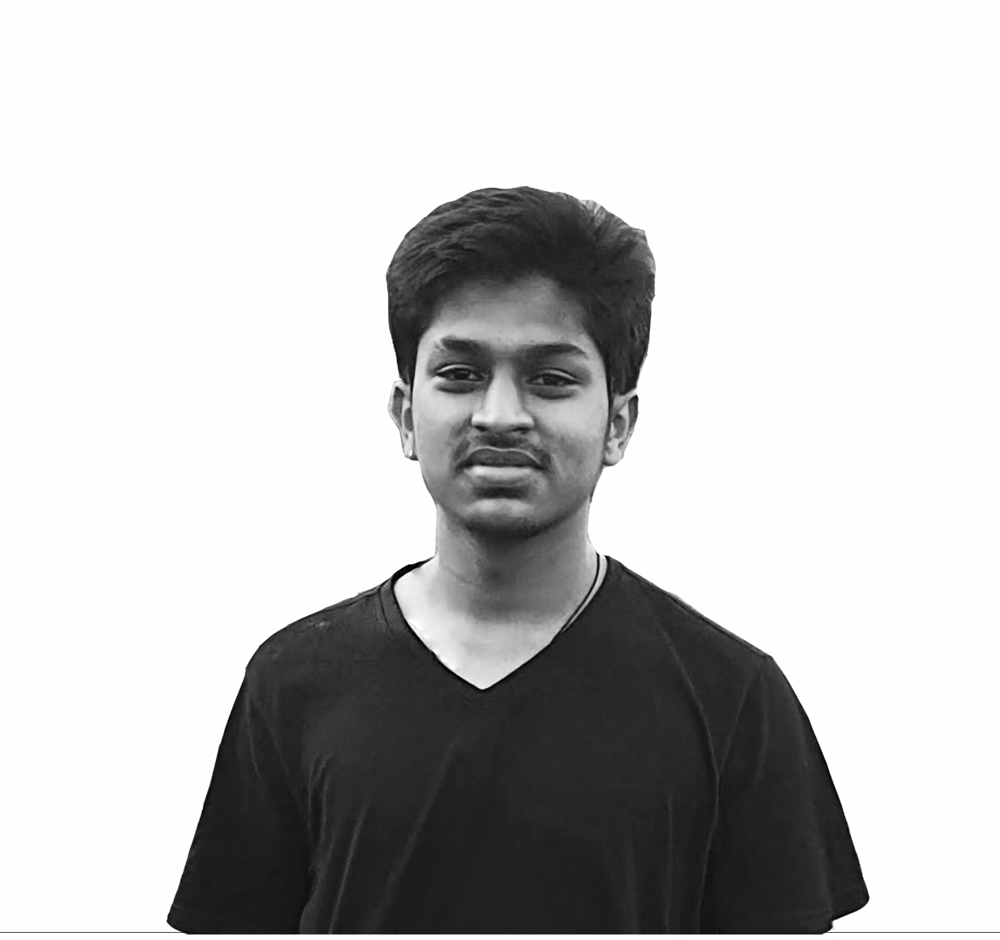

Bridging Gaps, Inspiring Inclusion: Designing for All
ABOUT
Greetings, I am Yash Kothari, an Interaction Design student from IDC IIT Bombay. My unwavering commitment to the design process enables me to craft tangible and innovative solutions that drive positive social change. With a keen eye for detail, I consistently strive to create designs that are not only aesthetically pleasing but also foster equity and accessibility. My ultimate goal is to inspire individuals from all walks of life to embrace technology while uplifting and empowering users of diverse backgrounds. Through my unwavering dedication to utilizing design as a force for social good, I aim to make a meaningful impact on society.

Yash Kothari
EXPERIENCE
Research Assistant, IDC IIT Bombay
Co-authored a research paper on evaluation of Marathi Text-Entry Phrase Sets for Speech-Output Based Studies
Tour Manager, Trekfit adventures
Managed over 70 treks and tours both within and outside Maharashtra.
Organized a large-scale special event for a significant number of participants and spectators.
Experienced indigenous cultures and shared valuable information, organized daily activities based on clients' interests, and implemented effective marketing strategies
Adventure club IIT Bombay
Designed posters and Instagram posts to promote club events, managed climbing events for club members, and organized all treks in Western Ghats and Himalayas.
Managed and organized departmental trips at IIT Bombay